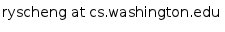

Raymond Cheng
|  | Links | ||
| My Homepage | |||
| CV | |||
| Hype Machine |
{kind=link}
About Me
I am currently pursuing a PhD degree in Computer Science at the
University of Washington. I perform research in the
Networks Lab
at CSE
with Tom Anderson and
Arvind Krishnamurthy.
My research interests are in distributed systems and security,
with a focus on systems design and evaluation. I am interested
in building novel systems that broaden the rights held by
Internet users.
That and the application of scientific principles to electrofunk.
{kind=link}
Research
FreeDOM: a New Baseline for the Web
UW Networks Group - Will Scott, Arvind Krishnamurthy, Tom Anderson
FreeDOM is an alternative model for building low-cost, self-scaling web services.
Published in HotNets 2012
Download Paper:
PDF,
Backup PDF
Watch Talk:
PPTX Slides,
YouTube
SolocoRank: Social Signals for Local Search Quality
Google -
Michael Schueppert,
Hila Becker,
Mayur Thakur
SolocoRank is a new ranking algorithm that leverages social media to rank
physical establishments such as restaurants and bars.
Paper currently under submission.
Unblock: Towards Blocking-Resistant Network Services
UW Networks Group - Will Scott, Arvind Krishnamurthy, Tom Anderson
Unblock is a novel proxy service, constructed from an augmented social graph.
By leveraging the unique properties of trusted social links, Unblock provides
stronger resistance to blocking by a censor than is seen in existing systems.
Download Paper: PDF
Project Webpage
Kineograph: Taking the Pulse of a Fast-Changing and Connected World
Microsoft Research Asia, Systems Research Group - Lidong Zhou, Fan Yang
Kineograph is a new graph computation engine, optimized for processing
real-time social data. Our goal was to enable real-time applications
(such as user ranking and approximate shortest paths), such that new data
is reflected in the computed results within a couple minutes.
Microsoft Research Project Page
Published in Eurosys 2012
Download Paper: PDF, Backup PDF, PPTX Slides
WhanauSIP: A Secure Peer-to-Peer
Communications Platform
MIT CSAIL, PDOS - Prof. Kaashoek, Chris Lesniewski-Laas
Thesis PDF, Github

Projects
RaymondCheng.net
I wanted my webpage to reflect my quirky personality.
The data is served from
a console interface (my favorite computing environment), which I proudly call
RAy SHell = RASH.
Its modular, simple, clean, and not for the faint-of-heart.
For those looking for a familiar webpage, it also includes a blog and
an auto-generated standard webpage.
Pokerbot
Before the days of OpenHoldem, I built a Pokerbot capable of playing online poker
on Full Tilt. Using a screenscraper and the Java Robot class, the code was built
with the focus on being completely undetectable by any known bot-detecting
techniques. Even with the most basic poker AI, I was able to earn
a pretty penny in fake money.
Solar Printer
MIT Media Lab, Tangible Media Group - Dr. Fletcher
Designed the embedded circuit board and firmware for a self-sufficient inkless
printer, powered by solar power and photochromic paper for use in
third-world countries.
Website
{kind=link}
Education
University of Washington Ph.D. Candidate Computer Science (2011-2015)
University of Washington M.S. Computer Science (2011-2012)
MIT M.Eng. Electrical Engineering and Computer Science (2009-2010)
MIT B.S. Electrical Engineering and Computer Science (2005-2009)
MIT B.S. Physics (2005-2009)
Activities:
UW SEBA (2011-Present)
Phi Kappa Theta Fraternity (2006-Present)
MIT Imobilare Breakdance Club (2005-2010) - Dancer, President
MIT Dancetroupe (2005-2009) - Dancer, Choreographer, Webmaster
{kind=link}
{kind=link}
Publications
Scott, W., Cheng, R., Li, J., Krishnamurthy, A., Anderson, T.
Blocking-Resistant Network Services using Unblock.
In progress. 2012.
PDF
Cheng, R., Scott, W., Krishnamurthy, A., and Anderson, T.
FreeDOM: a New Baseline for the Web.
The Eleventh ACM Workshop on Hot Topics in Networks
(HotNets XI). 2012. 19.17% acceptance rate.
PDF
Cheng, R., Hong, Ji., Kyrola, A., Miao, Y., Weng, X.,
Wu, M., Yang, F., Zhou, L., Zhao, F., and Chen, E.
Kineograph: Taking the Pulse of a Fast-Changing and Connected World.
Eurosys 2012: ACM SIGOPS Conference on Systems.
15.16% acceptance rate.
PDF,
Backup PDF
Cheng, R. WhanauSIP - A Secure Peer-to-Peer Communications Platform.
Advised by Frans Kaashoek. Massachusetts Institute of Technology
M.Eng. thesis, August 2010.
PDF,
Github
{kind=link}
Invited Talks
FreeDOM: a New Baseline for the Web
HotNets XI. Redmond, WA. Oct 2012.
PPTX Slides,
YouTube
Kineograph: Taking the Pulse of a Fast-Changing and Connected World
Eurosys 2012. Bern, Switzerland. Apr 2012.
Stanford Mobisocial Seminar. Palo Alto, CA. Apr 2012.
Palantir. Palo Alto, CA. May 2012.
PPTX Slides
Donor Appreciation Speech
UW CSE Fellowship Luncheon. Seattle, WA. Apr 2012.
{kind=link}
Awards and Honors
Madrona Runner-Up Prize for Best Poster (Oct 2012)
Wissner-Slivka Graduate Fellowship (Sep 2011 - Jun 2012)
CSE544 Best Databases Class Project (Jun 2012)
Sigma Xi Scientific Research Honor Society (May 2009 - present)
Dance
I dance to put a smile on my face at the end of a hard day, to release the built-up
energy from sitting at a keyboard all day, and inexplicably when a good song comes
on the playlist.
My focus is on breaking and house, although Ive also done hiphop,
popping, locking, and other funk. The following includes some highlights from my stint
at MIT.
Groups:
Imobilare: Web, Youtube
- President (2008-2009), Member (2005-2010)
- Managed one of the largest bboy practices in Boston, MA
- Organized Breakonomics 2009
Ridonkulous: Web, Youtube
- Member (2009-2010)
- Watch Performance Here: Download, Youtube
- Roxy Battle: Youtube
MIT Dance Troupe: Web, Youtube
- Choreographer/Member/Webmaster (2005-2009)
Choreography:
MIT Imobilare presents 'A Troupe of Dancers'
(Spring 2007 w/Stephen Steger and Yang Zhang): Download, Youtube
Pooface, A Daft Punk Tribute
(Fall 2007 w/Stephen Steger and Sungmin Son): Download, Youtube
Easy Break Oven, with Superheroes
(Spring 2008 w/Stephen Steger): Youtube
Mulan, The Story
(Fall 2008 w/Lynne Tye): Download, Youtube, Cambridge Community Television
Funk Actually
(Spring 2009 w/Mason Tang and John Lim): Download, Youtube
Events:
Breakonomics (Co-organizer) 2007-2009:
Youtube
MIT-Harvard Battle: Youtube
Battle w/Curtis: Facebook
Good Foot Crew @Freshest of All Time: Facebook
Ray@Mass Destruction: Facebook
MIT-Cornell Battle: Youtube
MIT@Mass Destruction: Youtube
MIT@Break House Jam Youtube
{kind=link}
Flight
Since 2010, Ive been training towards my private pilots license.
For those interested in taking mini-vacations with me, stay tuned!
Plane: Cessna 152
Airports: Boeing Field (BFI), Tipton (FME)
Destination: Everywhere
Logbook Highlights:
2011/03/14 - First solo flight! @Carroll County Airport (DMW)
2011/03/13 - First long XC to Ocean City, MD (OXB) and Easton, MD (ESN)
2011/03/08 - XC to Salisbury, MD (SBY)
2011/12-2011/02 - Torturous landing practices in the traffic pattern
2010/11/19 - to Easton, MD (ESN)
2010/10/02 - to Gaithersburg, MD (GAI)
2010/09/23 - to Deale Intersection
2010/09/19 - to Bay Bridge Airport, MD (W29)
{kind=link}
Seaman
In Oct. 2011, I became the proud owner of a 32' Bayliner powerboat,
called the Twenty Twenty. It has a bedroom full of mold,
a kitchen that doesnt work, a bathroom that doesnt work, and no engines.
In no time Ill be starting my Seattle pirate gang. Stay tuned for updates!
{kind=link}
Motorcycle
Funny story: I learned how to ride motorcycles by `testing` out bikes
that I wanted to `buy` on Craigslist. That, and a seven-step guide on about.com.
Shortly after stalling a bunch of times, I started commuting to work that way.
I learned how many gears the bike had when I took it on the freeway
for the first time, going from DC to PA. It has 6.
A year later, I finally took a safety class and Ive been biking ever since.
Im looking for new members for my Power Rangers bike gang.
Costume required.
Email if interested.
{kind=link}